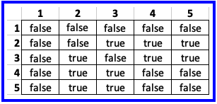

- 1) In the folder csse373devenv202330-yourID/components/include/UnlabeledUndirectedGraph create UnlabeledUndirectedGraph2.hpp
- 2) In UnlabeledUndirectedGraph2.hpp implement class UnlabeledUndirectedGraph2
- 3) You must:
- Implement UnlabeledUndirectedGraph2 using an adjacency matrix - see Figure 1 for an example
You may also add additional representation variables in order to achieve better performance for some of the exported operations, i.e., a space for time trade-off - Use a layered implementation by layering on the CeramicArray1 component and its corresponding CeramicArrayChecking1 component
- Implement all 15 methods - see Figure 2
- Use C++'s conditional compilation and use CeramicArrayChecking1 in Debug Mode and only CeramicArray1 when in Release mode
- Define the correspondence as a comment in the
'private: // Representation' part
This will be visually inspected during grading
- Implement UnlabeledUndirectedGraph2 using an adjacency matrix - see Figure 1 for an example
- Important requirements on implementing operator <<
I recommend that you start with the implementation found in UnlabeledUndirectedGraph1.hpp
Then make sure operator << meets the following criteria:- A graph variable must be displayed using its abstract mathematical model
- operator << must be a client of UnlabeledUndirectedGraph and call only its operations; it is not allowed to call CeramicArray1's operations
- The vertex set must be displayed in increasing order
- Each edge (which is a set) must be displayed so that the leftmost vertex of the set is <= to the rightmost vertex
- The edge set must be displayed in nondecreasing order based on the leftmost vertex in the set
- When there are two or more edges with the same leftmost vertex, then those edges must be displayed in nondecreasing order by the rightmost vertex
- Include no extra spaces in the displayed value
- For the graph shown in Figure 1, operator << would produce:
({1,2,3,4,5},{{1,2},{1,3},{2,3},{2,4},{2,5},{3,4},{3,5}})
- To test your implementation you might want to use the driver.cpp or the PM3.cpp found in PM3Starter.zip

Figure 2


Figure 1 - Graph g and its adjacency matrix